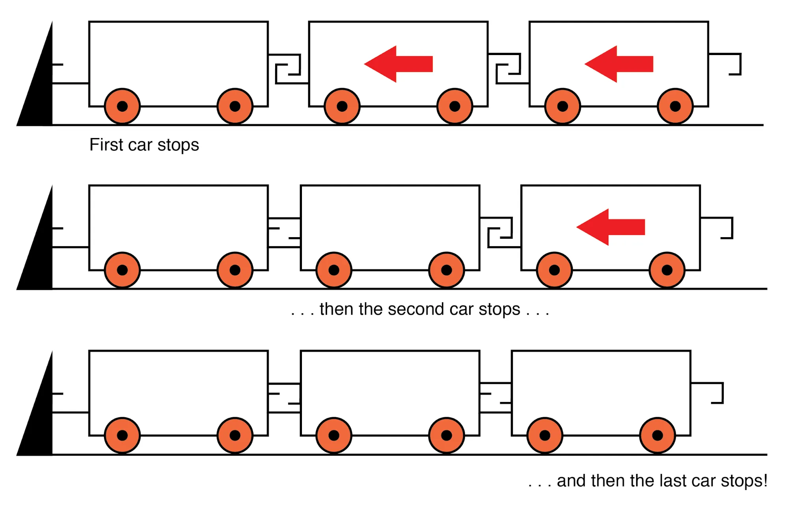
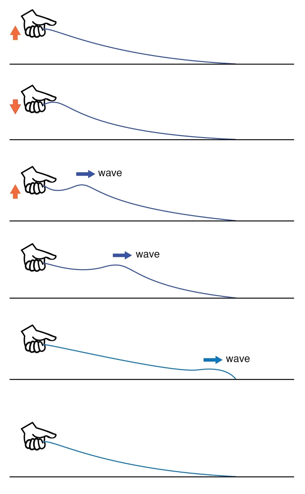
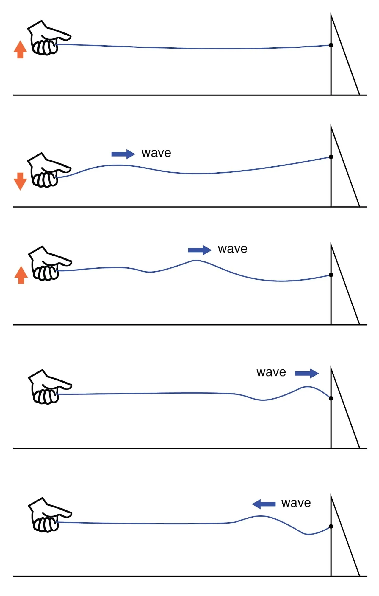
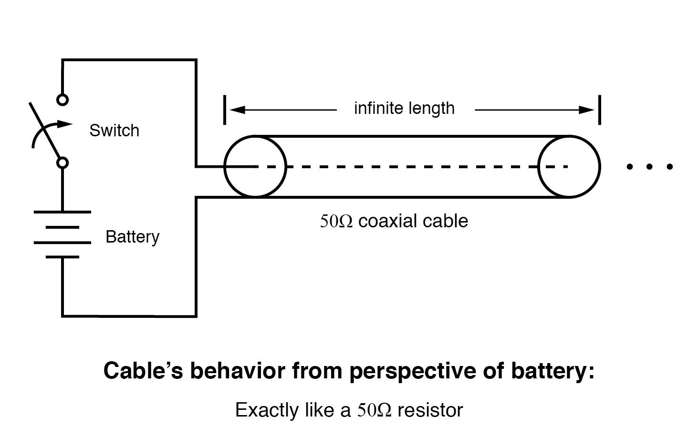
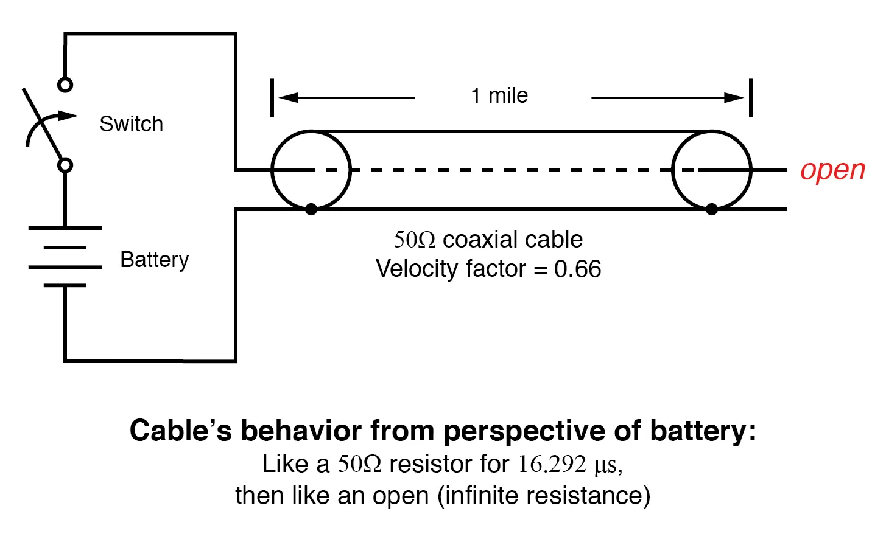
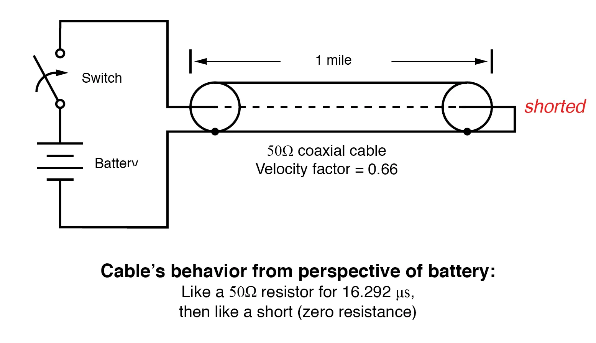
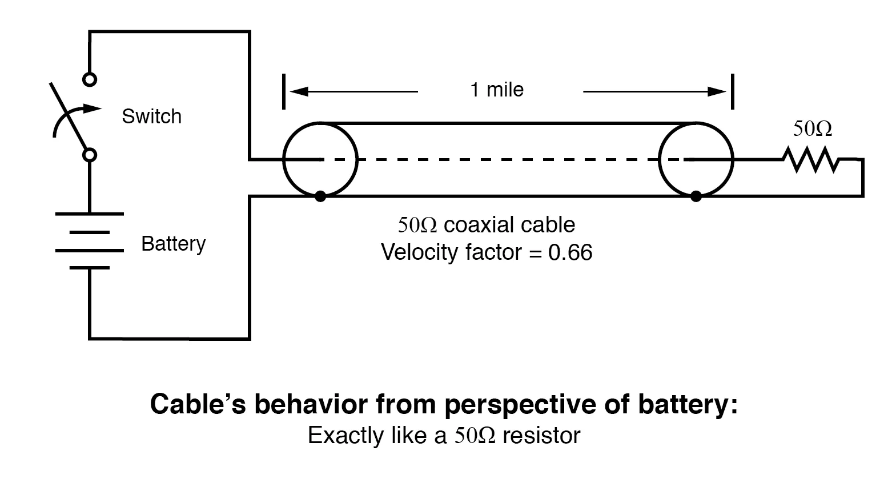

A transmission line of infinite length is an interesting abstraction, but physically impossible. All transmission lines have some finite length, and as such do not behave precisely the same as an infinite line.
If that piece of 50 Ω “RG-58/U” cable I measured with an ohmmeter years ago had been infinitely long, I actually would have been able to measure 50 Ω worth of resistance between the inner and outer conductors. But it was not infinite in length, and so it measured as “open” (infinite resistance).
Nonetheless, the characteristic impedance rating of a transmission line is important even when dealing with limited lengths. An older term for characteristic impedance, which I like for its descriptive value, is surge impedance.
If a transient voltage (a “surge”) is applied to the end of a transmission line, the line will draw a current proportional to the surge voltage magnitude divided by the line’s surge impedance (I=E/Z). This simple, Ohm’s Law relationship between current and voltage will hold true for a limited period of time, but not indefinitely.
If the end of a transmission line is open-circuited—that is, left unconnected—the current “wave” propagating down the line’s length will have to stop at the end, since current cannot flow where there is no continuing path.
This abrupt cessation of current at the line’s end causes a “pile-up” to occur along the length of the transmission line, as the electric charge carriers successively find no place to go.
Imagine a train traveling down the track with slack between the railcar couplings: if the lead car suddenly crashes into an immovable barricade, it will come to a stop, causing the one behind it to come to a stop as soon as the first coupling slack is taken up, which causes the next rail car to stop as soon as the next coupling’s slack is taken up, and so on until the last rail car stops.
The train does not come to a halt together, but rather in sequence from first car to last: (Figure below)

A signal propagating from the source-end of a transmission line to the load-end is called an incident wave. The propagation of a signal from load-end to source-end (such as what happened in this example with current encountering the end of an open-circuited transmission line) is called a reflected wave.
When this electric charge carrier “pile-up” propagates back to the battery, current at the battery ceases, and the line acts as a simple open circuit.
All this happens very quickly for transmission lines of reasonable length, and so an ohmmeter measurement of the line never reveals the brief time period where the line actually behaves as a resistor.
For a mile-long cable with a velocity factor of 0.66 (signal propagation velocity is 66% of light speed or 122,760 miles per second), it takes only 1/122,760 of a second (8.146 microseconds) for a signal to travel from one end to the other. For the current signal to reach the line’s end and “reflect” back to the source, the round-trip time is twice this figure or 16.292 µs.
High-speed measurement instruments are able to detect this transit time from source to line-end and back to the source again and may be used for the purpose of determining a cable’s length.
This technique may also be used for determining the presence and location of a break in one or both of the cable’s conductors since current will “reflect” off the wire break just as it will off the end of an open-circuited cable.
Instruments designed for such purposes are called time-domain reflectometers (TDRs). The basic principle is identical to that of sonar range-finding: generating a sound pulse and measuring the time it takes for the echo to return.
A similar phenomenon takes place if the end of a transmission line is short-circuited: when the voltage wave-front reaches the end of the line, it is reflected back to the source, because voltage cannot exist between two electrically common points.
When this reflected wave reaches the source, the source sees the entire transmission line as a short-circuit. Again, this happens as quickly as the signal can propagate round-trip down and up the transmission line at whatever velocity allowed by the dielectric material between the line’s conductors.
A simple experiment illustrates the phenomenon of wave reflection in transmission lines. Take a length of rope by one end and “whip” it with a rapid up-and-down motion of the wrist. A wave may be seen traveling down the rope’s length until it dissipates entirely due to friction: (Figure below)

Lossy transmission line.
This is analogous to a long transmission line with internal loss: the signal steadily grows weaker as it propagates down the line’s length, never reflecting back to the source. However, if the far end of the rope is secured to a solid object at a point prior to the incident wave’s total dissipation, a second wave will be reflected back to your hand: (Figure below)

Reflected wave.
Usually, the purpose of a transmission line is to convey electrical energy from one point to another.
Even if the signals are intended for information only, and not to power some significant load device, the ideal situation would be for all of the original signal energy to travel from the source to the load, and then be completely absorbed or dissipated by the load for maximum signal-to-noise ratio.
Thus, “loss” along the length of a transmission line is undesirable, as are reflected waves, since reflected energy is energy not delivered to the end device.
Reflections may be eliminated from the transmission line if the load’s impedance exactly equals the characteristic (“surge”) impedance of the line.
For example, a 50 Ω coaxial cable that is either open-circuited or short-circuited will reflect all of the incident energy back to the source. However, if a 50 Ω resistor is connected at the end of the cable, there will be no reflected energy, all signal energy being dissipated by the resistor.
This makes perfect sense if we return to our hypothetical, infinite-length transmission line example. A transmission line of 50 Ω characteristic impedance and infinite length behaves exactly like a 50 Ω resistance as measured from one end. (Figure below)
If we cut this line to some finite length, it will behave like a 50 Ω resistor to a constant source of DC voltage for a brief time, but then behave like an open- or a short-circuit, depending on what condition we leave the cut end of the line: open or shorted. (Figure below)
However, if we terminate the line with a 50 Ω resistor, the line will once again behave as a 50 Ω resistor, indefinitely: the same as if it were of an infinite length again: (Figure below)

Infinite transmission line looks like resistor.

One mile transmission.

Shorted transmission line.

Line terminated in characteristic impedance.
In essence, a terminating resistor matching the natural impedance of the transmission line makes the line “appear” infinitely long from the perspective of the source, because a resistor has the ability to eternally dissipate energy in the same way a transmission line of infinite length is able to eternally absorb energy.
Reflected waves will also manifest if the terminating resistance isn’t precisely equal to the characteristic impedance of the transmission line, not just if the line is left unconnected (open) or jumpered (shorted).
Though the energy reflection will not be total with a terminating impedance of a slight mismatch, it will be partial. This happens whether or not the terminating resistance is greater or less than the line’s characteristic impedance.
Re-reflections of a reflected wave may also occur at the source end of a transmission line if the source’s internal impedance (Thevenin equivalent impedance) is not exactly equal to the line’s characteristic impedance.
A reflected wave returning back to the source will be dissipated entirely if the source impedance matches the line’s, but will be reflected back toward the line end like another incident wave, at least partially, if the source impedance does not match the line.
This type of reflection may be particularly troublesome, as it makes it appear that the source has transmitted another pulse.
REVIEW: